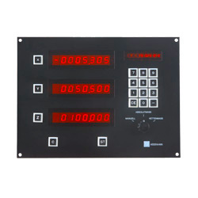

The Machine That Asked the Machinist
Most CNC machines made the machinist learn a programming language. The Heidenhain TNC 110 flipped it: the machine tool itself asked the questions, and the operator just answered.
For most of the 1970s, programming a machine tool meant learning to talk like a computer. You wrote G-code — coordinate numbers and canned cycles that read like a cryptographer's shopping list — or you punched it onto tape in an office and handed the tape to the machine like a typed demand note. The human adapted to the machine. This was the entire contract of numerical control, and it stayed that way from the late 1950s until 1976.
Then a German company that had spent eighty years measuring things decided the contract was upside down.

The machine that made you answer
The Heidenhain TNC 110 was the first conversational CNC control. Heidenhain called it TNC for "Touch Numerical Control," and the touch was the point. Instead of requiring the operator to write G-code or prepare punched tape, the machine itself drove the conversation. It posed a question on its CRT — TOOL NUMBER?, POSITION X?, FEED RATE?, CYCLE TYPE? — and the operator answered with a labeled function key (POS, TOOL, CYCLE, PATH, INPUT) or a number on the keypad, and the machine converted the answers into cutting motion internally.
The programming manual came out to ten pages. The G-code binders it replaced were thick enough to prop open a car hood. A skilled machinist who had never written a line of computer code — who had no interest in computer code — could suddenly program their own machine on the shop floor, in the language of the workshop rather than the language of the computer.
An early bystander, a lasting idea
The TNC 110 was a positioning control for drilling and milling, Heidenhain's very first CNC. It came from a company known for precision measurement — linear encoders, angle encoders, digital readouts — so the leap into controlling position was a natural extension of their obsession with knowing where things are. It sits in the museum's quiet line of machine-instruments, alongside the Tektronix 7854 and the Fluke 9010A, but it is the first one out on the factory floor: the museum's first industrial machine-tool control.
Here is the interaction model in its strangest, most human form: the machine as interrogator. Most programming interfaces work the other way — the human asks, the machine answers. Here the machine asked and the human responded, like a new hire being walked through a task by a very literal supervisor who happened to be made of cast iron and servomotors.
I love that this is the hardest-working kind of HCI there is, hiding in the most unglamorous place. No consumer gadget, no glossy launch — just a box on a milling machine in a German workshop, patiently asking TOOL NUMBER? until a human who never learned to program got the part cut. The conversational paradigm was so right that Heidenhain kept it through the TNC 7 series. By 2006 they had shipped nearly 200,000 controls carrying this idea forward.
Why the inversion matters
There is a temptation to read every "machine asks, human answers" artifact in the museum as the same story. The calculator that asked the questions quizzes a child; the book machine that asks, you answer walks a reader through a dictionary. But the TNC 110 is a different species entirely. Those are teaching machines gently prodding a learner. This is a production tool on the floor of a factory, interacting with a professional whose entire craft is in their hands, not their typing.
The inversion is not one of pedagogy but of who does the programming work. In conventional CNC, the human is the programmer and the machine is the executor — and the human pays for that privilege by learning G-code. On the TNC 110, that labor is reversed: the machine performs the programming task, structuring the questions, ordering the operations, and absorbing the internal syntax — while the human supplies only the parameters they already know from the trade. The machinist does not speak to the machine in a foreign language. The machine speaks to the machinist in the machinist's language.
That is the whole trick, and it is a genuinely beautiful one: to design an interface by which the more skilled and embodied participant — the one who can feel the tool cutting — is spared every task computers are better at, and required only to do the one thing computers reach for forever: know the values of the world. TOOL NUMBER? POSITION X? FEED RATE?
The machine asked. The machinist answered. And for forty years of milling machines, that quiet dialog has been cutting metal.
— Beepy